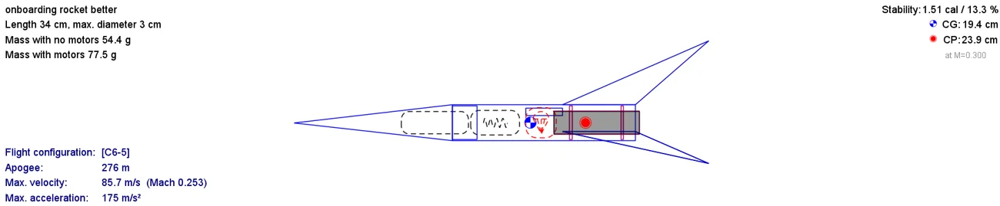
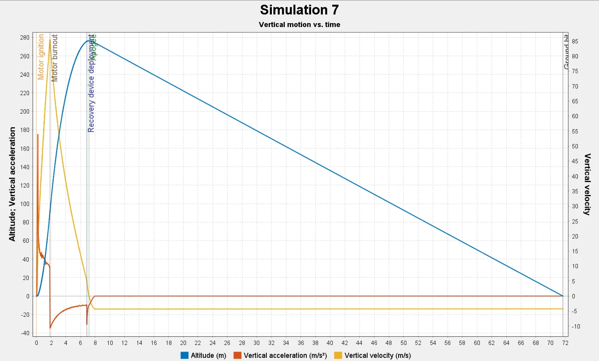

AEROSPACE / CAD
ROCKET DESIGN & TESTING
CAD modeling, stability studies, prototyping and launch with Purdue Space Program.

FIELD TEST / VIDEO
ROCKET LAUNCH
Footage from my Purdue Space Program model rocket launch. Video documents the flight; actual apogee was not recovered from onboard data.

